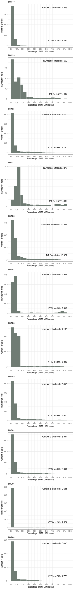

![]()
Sys.time()[1] "2023-07-21 20:37:58 CST"Sys.time()[1] "2023-07-21 20:37:58 CST"[1] "Asia/Shanghai"PROJECT_DIR <- "/Users/jialei/Dropbox/Data/Projects/UTSW/Peri-implantation"Load required packages.
library(tidyverse)
## ── Attaching core tidyverse packages ─────────────────── tidyverse 2.0.0.9000 ──
## ✔ dplyr 1.1.2.9000 ✔ readr 2.1.4.9000
## ✔ forcats 1.0.0.9000 ✔ stringr 1.5.0.9000
## ✔ ggplot2 3.4.2.9000 ✔ tibble 3.2.1.9005
## ✔ lubridate 1.9.2.9000 ✔ tidyr 1.3.0.9000
## ✔ purrr 1.0.1.9000
## ── Conflicts ────────────────────────────────────────── tidyverse_conflicts() ──
## ✖ dplyr::filter() masks stats::filter()
## ✖ dplyr::lag() masks stats::lag()
## ℹ Use the conflicted package (<http://conflicted.r-lib.org/>) to force all conflicts to become errors
library(Matrix)
##
## Attaching package: 'Matrix'
##
## The following objects are masked from 'package:tidyr':
##
## expand, pack, unpack
library(patchwork)
library(extrafont)
## Registering fonts with R`%+replace%` <- ggplot2::`%+replace%`library(knitr)
knit_print.data.frame <- function(x, options, ...) {
rmarkdown::paged_table(x, options) |>
rmarkdown:::print.paged_df()
}
registerS3method("knit_print", "data.frame", knit_print.data.frame)reticulate::py_config()python: /Users/jialei/.pyenv/shims/python
libpython: /Users/jialei/.pyenv/versions/mambaforge-22.9.0-3/lib/libpython3.10.dylib
pythonhome: /Users/jialei/.pyenv/versions/mambaforge-22.9.0-3:/Users/jialei/.pyenv/versions/mambaforge-22.9.0-3
version: 3.10.9 | packaged by conda-forge | (main, Feb 2 2023, 20:26:08) [Clang 14.0.6 ]
numpy: /Users/jialei/.pyenv/versions/mambaforge-22.9.0-3/lib/python3.10/site-packages/numpy
numpy_version: 1.24.3
anndata: /Users/jialei/.pyenv/versions/mambaforge-22.9.0-3/lib/python3.10/site-packages/anndata
NOTE: Python version was forced by RETICULATE_PYTHONlibraries <- c(
"LW119",
"LW120",
"LW121",
"LW122",
"LW186",
"LW187",
"LW188",
"LW189",
"LW202",
"LW203",
"LW204"
)Check files.
purrr::map_lgl(libraries, \(x) {
file_path <- file.path(
PROJECT_DIR,
"raw",
x,
"preprocessing",
"filtered_feature_bc_matrix.h5"
)
cat(file_path, "\n")
file.exists(file_path)
})/Users/jialei/Dropbox/Data/Projects/UTSW/Peri-implantation/raw/LW119/preprocessing/filtered_feature_bc_matrix.h5
/Users/jialei/Dropbox/Data/Projects/UTSW/Peri-implantation/raw/LW120/preprocessing/filtered_feature_bc_matrix.h5
/Users/jialei/Dropbox/Data/Projects/UTSW/Peri-implantation/raw/LW121/preprocessing/filtered_feature_bc_matrix.h5
/Users/jialei/Dropbox/Data/Projects/UTSW/Peri-implantation/raw/LW122/preprocessing/filtered_feature_bc_matrix.h5
/Users/jialei/Dropbox/Data/Projects/UTSW/Peri-implantation/raw/LW186/preprocessing/filtered_feature_bc_matrix.h5
/Users/jialei/Dropbox/Data/Projects/UTSW/Peri-implantation/raw/LW187/preprocessing/filtered_feature_bc_matrix.h5
/Users/jialei/Dropbox/Data/Projects/UTSW/Peri-implantation/raw/LW188/preprocessing/filtered_feature_bc_matrix.h5
/Users/jialei/Dropbox/Data/Projects/UTSW/Peri-implantation/raw/LW189/preprocessing/filtered_feature_bc_matrix.h5
/Users/jialei/Dropbox/Data/Projects/UTSW/Peri-implantation/raw/LW202/preprocessing/filtered_feature_bc_matrix.h5
/Users/jialei/Dropbox/Data/Projects/UTSW/Peri-implantation/raw/LW203/preprocessing/filtered_feature_bc_matrix.h5
/Users/jialei/Dropbox/Data/Projects/UTSW/Peri-implantation/raw/LW204/preprocessing/filtered_feature_bc_matrix.h5 [1] TRUE TRUE TRUE TRUE TRUE TRUE TRUE TRUE TRUE TRUE TRUEcells_selected_files <- c(
file.path(
PROJECT_DIR,
"raw",
"LW119",
"preprocessing",
"cells_scrublet_log_0.39_98_0.0418.txt"
),
file.path(
PROJECT_DIR,
"raw",
"LW120",
"matrix",
"cells_selected_cumulative.txt"
),
file.path(
PROJECT_DIR,
"raw",
"LW121",
"preprocessing",
"cells_scrublet_zscore_0.16_753_0.1174.txt"
),
file.path(
PROJECT_DIR,
"raw",
"LW122",
"matrix",
"cells_selected_cumulative.txt"
),
NA,
NA,
NA,
NA,
file.path(
PROJECT_DIR,
"raw",
"LW202",
"preprocessing",
"cells_scrublet_log_0.42_86_0.0153.txt"
),
NA,
NA
)purrr::map_lgl(cells_selected_files, \(x) {
cat(x, "\n")
file.exists(x)
})/Users/jialei/Dropbox/Data/Projects/UTSW/Peri-implantation/raw/LW119/preprocessing/cells_scrublet_log_0.39_98_0.0418.txt
/Users/jialei/Dropbox/Data/Projects/UTSW/Peri-implantation/raw/LW120/matrix/cells_selected_cumulative.txt
/Users/jialei/Dropbox/Data/Projects/UTSW/Peri-implantation/raw/LW121/preprocessing/cells_scrublet_zscore_0.16_753_0.1174.txt
/Users/jialei/Dropbox/Data/Projects/UTSW/Peri-implantation/raw/LW122/matrix/cells_selected_cumulative.txt
NA
NA
NA
NA
/Users/jialei/Dropbox/Data/Projects/UTSW/Peri-implantation/raw/LW202/preprocessing/cells_scrublet_log_0.42_86_0.0153.txt
NA
NA [1] TRUE TRUE TRUE TRUE FALSE FALSE FALSE FALSE TRUE FALSE FALSECreate anndata objects.
adatas$LW119
AnnData object with n_obs × n_vars = 2246 × 33538
obs: 'batch', 'num_umis', 'num_features', 'mt_percentage'
var: 'feature', 'symbol'
$LW120
AnnData object with n_obs × n_vars = 550 × 33538
obs: 'batch', 'num_umis', 'num_features', 'mt_percentage'
var: 'feature', 'symbol'
$LW121
AnnData object with n_obs × n_vars = 5660 × 33538
obs: 'batch', 'num_umis', 'num_features', 'mt_percentage'
var: 'feature', 'symbol'
$LW122
AnnData object with n_obs × n_vars = 375 × 33538
obs: 'batch', 'num_umis', 'num_features', 'mt_percentage'
var: 'feature', 'symbol'
$LW186
AnnData object with n_obs × n_vars = 12303 × 33538
obs: 'batch', 'num_umis', 'num_features', 'mt_percentage'
var: 'feature', 'symbol'
$LW187
AnnData object with n_obs × n_vars = 4263 × 33538
obs: 'batch', 'num_umis', 'num_features', 'mt_percentage'
var: 'feature', 'symbol'
$LW188
AnnData object with n_obs × n_vars = 7185 × 33538
obs: 'batch', 'num_umis', 'num_features', 'mt_percentage'
var: 'feature', 'symbol'
$LW189
AnnData object with n_obs × n_vars = 3808 × 33538
obs: 'batch', 'num_umis', 'num_features', 'mt_percentage'
var: 'feature', 'symbol'
$LW202
AnnData object with n_obs × n_vars = 5534 × 33538
obs: 'batch', 'num_umis', 'num_features', 'mt_percentage'
var: 'feature', 'symbol'
$LW203
AnnData object with n_obs × n_vars = 2631 × 33538
obs: 'batch', 'num_umis', 'num_features', 'mt_percentage'
var: 'feature', 'symbol'
$LW204
AnnData object with n_obs × n_vars = 8800 × 33538
obs: 'batch', 'num_umis', 'num_features', 'mt_percentage'
var: 'feature', 'symbol'Visualize mitochondrial UMI percentage.
purrr::map(names(adatas), \(x) {
plot_mt_percentage(adata = adatas[[x]]) +
ggplot2::ggtitle(x) +
ggplot2::theme(plot.title = element_text(size = 7))
}) |>
purrr::reduce(`+`) +
patchwork::plot_layout(ncol = 1) +
patchwork::plot_annotation(
theme = ggplot2::theme(plot.margin = ggplot2::margin())
)
devtools::session_info()─ Session info ───────────────────────────────────────────────────────────────
setting value
version R version 4.3.1 (2023-06-16)
os macOS Ventura 13.4.1
system aarch64, darwin22.4.0
ui unknown
language (EN)
collate en_US.UTF-8
ctype en_US.UTF-8
tz Asia/Shanghai
date 2023-07-21
pandoc 2.19.2 @ /Users/jialei/.pyenv/shims/ (via rmarkdown)
─ Packages ───────────────────────────────────────────────────────────────────
package * version date (UTC) lib source
cachem 1.0.8 2023-05-01 [1] CRAN (R 4.3.0)
callr 3.7.3 2022-11-02 [1] CRAN (R 4.3.0)
cli 3.6.1 2023-03-23 [1] CRAN (R 4.3.0)
colorspace 2.1-0 2023-01-23 [1] CRAN (R 4.3.0)
crayon 1.5.2 2022-09-29 [1] CRAN (R 4.3.0)
devtools 2.4.5.9000 2023-07-13 [1] Github (r-lib/devtools@2c642ab)
digest 0.6.33 2023-07-07 [1] CRAN (R 4.3.1)
dplyr * 1.1.2.9000 2023-07-19 [1] Github (tidyverse/dplyr@c963d4d)
ellipsis 0.3.2 2021-04-29 [1] CRAN (R 4.3.0)
evaluate 0.21 2023-05-05 [1] CRAN (R 4.3.0)
extrafont * 0.19 2023-01-18 [1] CRAN (R 4.3.0)
extrafontdb 1.0 2012-06-11 [1] CRAN (R 4.3.0)
fansi 1.0.4 2023-01-22 [1] CRAN (R 4.3.0)
farver 2.1.1 2022-07-06 [1] CRAN (R 4.3.0)
fastmap 1.1.1 2023-02-24 [1] CRAN (R 4.3.0)
forcats * 1.0.0.9000 2023-04-23 [1] Github (tidyverse/forcats@4a8525a)
fs 1.6.2 2023-04-25 [1] CRAN (R 4.3.0)
generics 0.1.3 2022-07-05 [1] CRAN (R 4.3.0)
ggplot2 * 3.4.2.9000 2023-06-30 [1] Github (tidyverse/ggplot2@2a7ca74)
glue 1.6.2.9000 2023-04-23 [1] Github (tidyverse/glue@cbac82a)
gtable 0.3.3.9000 2023-04-23 [1] Github (r-lib/gtable@c56fd4f)
hms 1.1.3 2023-03-21 [1] CRAN (R 4.3.0)
htmltools 0.5.5 2023-03-23 [1] CRAN (R 4.3.0)
htmlwidgets 1.6.2 2023-03-17 [1] CRAN (R 4.3.0)
jsonlite 1.8.7 2023-06-29 [1] CRAN (R 4.3.1)
knitr * 1.43 2023-05-25 [1] CRAN (R 4.3.0)
labeling 0.4.2 2020-10-20 [1] CRAN (R 4.3.0)
lattice 0.21-8 2023-04-05 [2] CRAN (R 4.3.1)
lifecycle 1.0.3 2022-10-07 [1] CRAN (R 4.3.0)
lubridate * 1.9.2.9000 2023-07-17 [1] Github (tidyverse/lubridate@11d1c9a)
magrittr 2.0.3 2022-03-30 [1] CRAN (R 4.3.0)
Matrix * 1.6-0 2023-07-08 [2] CRAN (R 4.3.1)
memoise 2.0.1 2021-11-26 [1] CRAN (R 4.3.0)
munsell 0.5.0 2018-06-12 [1] CRAN (R 4.3.0)
patchwork * 1.1.2.9000 2023-04-23 [1] Github (thomasp85/patchwork@c14c960)
pillar 1.9.0 2023-03-22 [1] CRAN (R 4.3.0)
pkgbuild 1.4.2 2023-06-26 [1] CRAN (R 4.3.1)
pkgconfig 2.0.3 2019-09-22 [1] CRAN (R 4.3.0)
pkgload 1.3.2.9000 2023-07-05 [1] Github (r-lib/pkgload@3cf9896)
png 0.1-8 2022-11-29 [1] CRAN (R 4.3.0)
prettyunits 1.1.1.9000 2023-04-23 [1] Github (r-lib/prettyunits@8706d89)
processx 3.8.2 2023-06-30 [1] CRAN (R 4.3.1)
ps 1.7.5 2023-04-18 [1] CRAN (R 4.3.0)
purrr * 1.0.1.9000 2023-04-23 [1] Github (tidyverse/purrr@fd5a732)
R.cache 0.16.0 2022-07-21 [1] CRAN (R 4.3.0)
R.methodsS3 1.8.2 2022-06-13 [1] CRAN (R 4.3.0)
R.oo 1.25.0 2022-06-12 [1] CRAN (R 4.3.0)
R.utils 2.12.2 2022-11-11 [1] CRAN (R 4.3.0)
R6 2.5.1.9000 2023-04-23 [1] Github (r-lib/R6@e97cca7)
Rcpp 1.0.11 2023-07-06 [1] CRAN (R 4.3.1)
readr * 2.1.4.9000 2023-04-23 [1] Github (tidyverse/readr@9558d89)
remotes 2.4.2.9000 2023-06-09 [1] Github (r-lib/remotes@8875171)
reticulate 1.30 2023-06-09 [1] CRAN (R 4.3.0)
rhdf5 2.44.0 2023-04-25 [1] Bioconductor
rhdf5filters 1.12.1 2023-04-30 [1] Bioconductor
Rhdf5lib 1.22.0 2023-04-25 [1] Bioconductor
rlang 1.1.1.9000 2023-06-09 [1] Github (r-lib/rlang@c55f602)
rmarkdown 2.23.3 2023-07-12 [1] Github (rstudio/rmarkdown@1d739bd)
rstudioapi 0.15.0.9000 2023-07-19 [1] Github (rstudio/rstudioapi@feceaef)
Rttf2pt1 1.3.12 2023-01-22 [1] CRAN (R 4.3.0)
scales 1.2.1 2022-08-20 [1] CRAN (R 4.3.0)
sessioninfo 1.2.2 2021-12-06 [1] CRAN (R 4.3.0)
stringi 1.7.12 2023-01-11 [1] CRAN (R 4.3.0)
stringr * 1.5.0.9000 2023-04-23 [1] Github (tidyverse/stringr@65b218e)
styler * 1.10.1 2023-07-17 [1] Github (r-lib/styler@aca7223)
tibble * 3.2.1.9005 2023-05-28 [1] Github (tidyverse/tibble@4de5c15)
tidyr * 1.3.0.9000 2023-04-23 [1] Github (tidyverse/tidyr@0764e65)
tidyselect 1.2.0 2022-10-10 [1] CRAN (R 4.3.0)
tidyverse * 2.0.0.9000 2023-04-23 [1] Github (tidyverse/tidyverse@8ec2e1f)
timechange 0.2.0 2023-01-11 [1] CRAN (R 4.3.0)
tzdb 0.4.0 2023-05-12 [1] CRAN (R 4.3.0)
usethis 2.2.2.9000 2023-07-11 [1] Github (r-lib/usethis@467ff57)
utf8 1.2.3 2023-01-31 [1] CRAN (R 4.3.0)
vctrs 0.6.3 2023-06-14 [1] CRAN (R 4.3.0)
withr 2.5.0 2022-03-03 [1] CRAN (R 4.3.0)
xfun 0.39 2023-04-20 [1] CRAN (R 4.3.0)
yaml 2.3.7 2023-01-23 [1] CRAN (R 4.3.0)
[1] /opt/homebrew/lib/R/4.3/site-library
[2] /opt/homebrew/Cellar/r/4.3.1/lib/R/library
─ Python configuration ───────────────────────────────────────────────────────
python: /Users/jialei/.pyenv/shims/python
libpython: /Users/jialei/.pyenv/versions/mambaforge-22.9.0-3/lib/libpython3.10.dylib
pythonhome: /Users/jialei/.pyenv/versions/mambaforge-22.9.0-3:/Users/jialei/.pyenv/versions/mambaforge-22.9.0-3
version: 3.10.9 | packaged by conda-forge | (main, Feb 2 2023, 20:26:08) [Clang 14.0.6 ]
numpy: /Users/jialei/.pyenv/versions/mambaforge-22.9.0-3/lib/python3.10/site-packages/numpy
numpy_version: 1.24.3
anndata: /Users/jialei/.pyenv/versions/mambaforge-22.9.0-3/lib/python3.10/site-packages/anndata
NOTE: Python version was forced by RETICULATE_PYTHON
──────────────────────────────────────────────────────────────────────────────Styling 1 files:
preprocess.qmd ✔
────────────────────────────────────────
Status Count Legend
✔ 1 File unchanged.
ℹ 0 File changed.
✖ 0 Styling threw an error.
────────────────────────────────────────